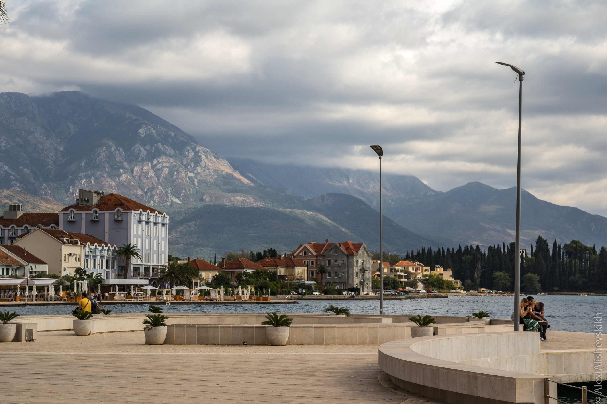

Boka Kotorska je najljepši i najjužniji zaliv u Evropi. Iznad uske obale izdižu se planinski vijenci koji štite ovaj predio od hladne kontinentalne klime. Prirodnom podjelom 4 manja zaliva: Herceg Novi, Risan, Kotor i Tivat čine ovaj Bokokotorski zaliv jedinstvenim. Kao nanizani biseri na obalskoj ogrlici nalaze se mali gradovi, bogati istorijom i kulturom: Kotor, Perast, Risan, Herceg Novi i Tivat. Često pominjan kao najjužniji fjord u Evropi, Bokokotorski zaliv je zapravo kanjon rijeke. Visoke planine, koje se izdižu iznad obale, štite zaliv od otvorenog mora i hladne klime zimi . Ovo omogućava da raznovrsna mediteranska vegetacija buja na ovim prostorima: agava, palme, mimoza, oleander, kivi, nar i ljekovito bilje.
Na ulazu u Bokokotorski zaliv nalazi se kamenito ostrvo i tvrđava Mamula iz 1850. godine. U bokokotorskom zalivu nalazi se 7 ostrva među kojima je najveće po površini sv. Marko (stariji naziv Stradioti), zatim Ostrvo Cvijeća, Mamula (Lastavica), Sv.Đorđe, Gospa od Škrpjela, Milosrđa (Otok), dok je najmanje ostrvo Mala Gospa. Mjesta u zalivu su međusobno povezana drumskim i pomorskim komunikacijama. One, takođe, čine dio ukupne atraktivnosti zaliva. Pomorske veze se ostvaruju posredstvom lokalne i linijske plovidbe. Ključnu ulogu u drumskom komuniciranju ima jadranska magistrala koja uokviruje zaliv povezujući priobalna mjesta. Najuži dio zaliva je tjesnac Verige, preko koga je planirana gradnja mosta, ali to nije ostvareno tako da u tom dijelu sada saobraća trajekt između Lepetana i Kamenara, čime znatno skraćuje dužinu jadranske magistrale kroz zaliv.
| Gradovi | Tivat | Kotor | Herceg novi |
|---|---|---|---|
| Površina | 46 km² | 335 km² | 235 km² |
| Populacija | 14.031 (2011.) | 22.601 (2011.) | 30.864 (2011.) |